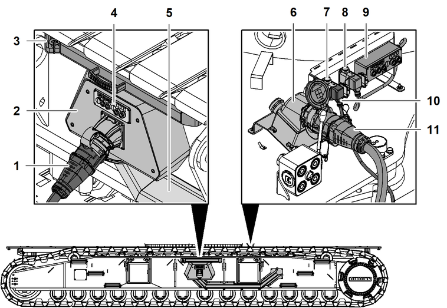

Ladeanschluss
Über den Ladeanschluss werden die Hochvoltbatterien geladen. Wenn Spannung am Gerätestecker anliegt, startet der Ladevorgang beim Einstecken automatisch.
Der Ladevorgang kann mit dem Steuerpult Ladeanschluss unterbrochen oder fortgesetzt werden. Der maximale Ladestrom ist über das Steuerpult Ladeanschluss vorzuwählen.
In Abhängigkeit der Umgebungstemperaturen ändert sich die Ladezeit.
Bei angeschlossenem Ladekabel ist Betrieb der Maschine möglich.
Folgende Komponenten oder Funktionen werden bei ausgeschalteter Steuerung über das eingesteckte Ladekabel versorgt:
– | Hindernisfeuer |
– | Tieftemperaturpaket |
– | Hochtemperaturpaket |
– | MyNotifier |

Fig. 45: Ladeanschluss
Kupplung vom Einsatzort | |
Gerätestecker mit Abdeckung am Raupenträger | |
Stützarm | |
Steuerpult Ladeanschluss am Raupenträger | |
Abdeckung der Hochvoltkabel | |
Gerätestecker am Mittelteil | |
Steckdose für Steuerpult Ladeanschluss | |
Blindsteckdose für Steuerpult Ladeanschluss am Mittelteil | |
Steuerpult Ladeanschluss am Mittelteil | |
Stecker des Steuerpults Ladeanschluss am Raupenträger | |
Kupplung vom Raupenträger |
Der Stützarm 3 ist die Zugentlastung des Ladekabels. Durch den Abstand zum Raupenträger wird verhindert, dass sich das Ladekabel in den Raupenträgern verfängt.
Die Kupplung 1 ist am Ladekabel und versorgt die Maschine extern mit Strom. Das Ladekabel wird vom Einsatzort zur Verfügung gestellt.
Über die Kupplung 11 wird die Stromversorgung vom Raupenträger zum Mittelteil verlängert. Das Hochvoltkabel befindet sich in der Abdeckung 5 und wird durch eine Öffnung im Raupenträger zum Mittelteil geführt.
Das Steuerpult Ladeanschluss 4 am Raupenträger wird mit dem Stecker 10 an der Maschine angeschlossen. Das Kabel befindet sich in der Abdeckung 5 und wird durch eine Öffnung im Raupenträger zum Mittelteil geführt.
Die Gerätestecker 2 + 6 sind in folgenden Varianten erhältlich:
– | DS6 für maximalen Ladestrom 63 A |
– | DS9 für maximalen Ladestrom 125 A |
Folgende Kabel werden mit dem Ladeanschluss 63 A mitgeliefert:
– | 10 m (32.81 ft) Anschlusskabel von DS6-Kupplung auf CEE-Stecker 63 A |
– | 3 m (9.84 ft) Anschlusskabel von CEE-Kupplung 63 A auf CEE-Stecker 32 A |
Folgende Kabel werden mit dem Ladeanschluss 125 A mitgeliefert:
– | 10 m (32.81 ft) Anschlusskabel von DS9-Kupplung auf CEE-Stecker 125 A |
– | 10 m (32.81 ft) Anschlusskabel von DS9-Kupplung auf CEE-Stecker 63 A |
– | 3 m (9.84 ft) Anschlusskabel von CEE-Kupplung 125 A auf CEE-Stecker 63 A |
– | 3 m (9.84 ft) Anschlusskabel von CEE-Kupplung 63 A auf CEE-Stecker 32 A |